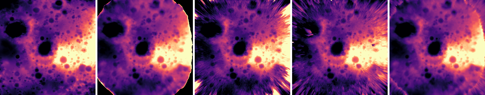
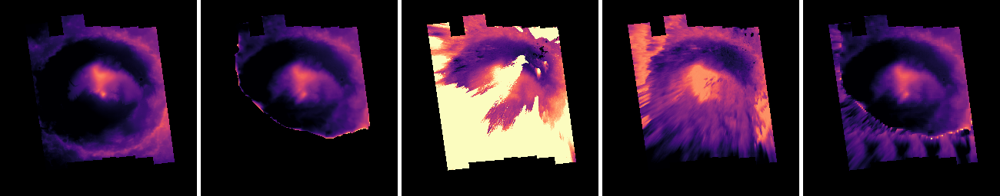

Abstract
Digital elevation modeling of planetary surfaces is essential for studying past and ongoing geological processes. Wideangle imagery acquired during spacecraft descent promises to offer a low-cost option for high-resolution terrain reconstruction. However, accurate 3D reconstruction from such imagery is challenging due to strong radial distortion and limited parallax from vertically descending, predominantly nadir-facing cameras. Conventional multi-view stereo exhibits limited depth range and reduced fidelity under these conditions and also lacks domain-specific priors. We present the first study of modern neural reconstruction methods for planetary descent imaging. We also develop a novel approach that incorporates an explicit neural height field representation, which provides a strong prior since planetary surfaces are generally continuous, smooth, solid, and free from floating objects. This study demonstrates that neural approaches offer a strong and competitive alternative to traditional multi-view stereo (MVS) methods. Experiments on simulated descent sequences over high-fidelity lunar and Mars terrains demonstrate that the proposed approach achieves increased spatial coverage while maintaining satisfactory estimation accuracy.

Qualitative comparison of DEM reconstructions from simulated lunar fisheye descent imagery against a high‑resolution mesh ground truth. Height is computed with respect to the top‑most camera. Our method achieves improved surface coverage while maintaining satisfactory elevation accuracy. From left to right: ground‑truth heightmap, Metashape heightmap, NeRF heightmap, our heightmap (without MVS supervision), and our heightmap (with MVS supervision).

Qualitative comparison of reconstructed DEMs from simulated Mars fisheye descent imagery, using a high-resolution mesh as ground truth. Our method achieves superior surface coverage while maintaining satisfactory elevation accuracy. The height is calculated from the top-most camera. Notably, Nerfacto suffers from floating artifacts, whereas our approach effectively suppresses these floaters, resulting in a smoother and more coherent surface reconstruction. From left to right: ground‑truth heightmap, Metashape heightmap, NeRF heightmap, our heightmap (without MVS supervision), and our heightmap (with MVS supervision)
BibTeX
@article{NePF26, title={Neural 3D Reconstruction of Planetary Surfaces from Descent-Phase Wide-Angle Imagery},
author={Melonie de Almeida and George Brydon and Divya M. Persaud and John H. Williamson and Paul Henderson},
journal={Arxiv:2604.13235},
year={2024},
}